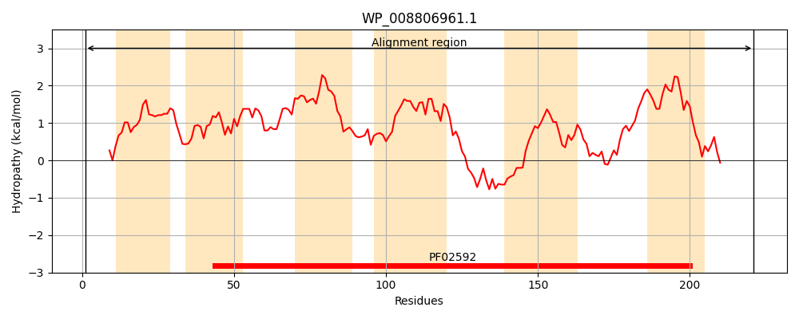
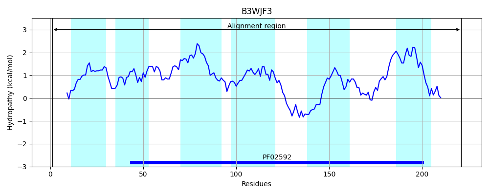
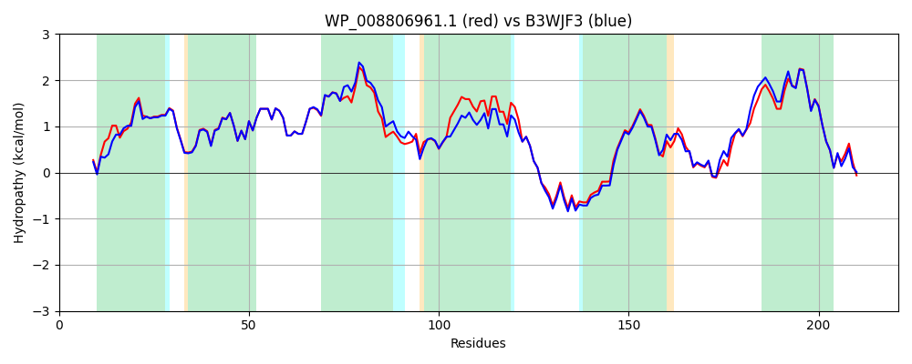

Hit Accession: B3WJF3
Hit TCID: 2.A.88.8.6
Hit Description: gnl|BL_ORD_ID|1863 gnl|TC-DB|B3WJF3|2.A.88.8.6 Putative membrane protein OS=Escherichia coli B171 GN=EcB171_3349 PE=4 SV=1
Mach Len: 221
e:0.000000
Query TMS Count : 6
Hit TMS Count: 6
TMS-Overlap Score: 6.250000
Predicted Substrates:None
BLAST Alignment:
Score: 1004 , Bit scores: 391 bits, E-value: 1.9e-140, Alignment length: 221, Percentage identity: 87
Query: 1 MNPFTTVQRKKALVWLSLFHLLVITSSNYLVQLPISIFGFHTTWGAFSFPFIFLATDLTVRIFGAPLARRIIFAVMVPALVISYGISALFYMGEWQGFAALGTFNLFVARIAIASFMAYALGQILDVHVFNRLRQSRHWWLAPTASTLFGNISDTVAFFFIAFWRSPDPFMAAHWGEIALVDYSFKVLISIIFFLPMYGVLLNMLLKRLADKSDLSALQPS 221
MN F+ QR KAL WLSLFHLLVITSSNYLVQLP+SIFGFHTTWGAFSFPFIFLATDLTVRIFGAPLARRIIFAVM+PAL+ISY IS+LFYMG WQGF AL FNLFVARIA ASFMAYALGQILDVHVFNRLRQSR WWLAPTASTLFGN+SDT+AFFFIAFWRSPD FMA HW EIALVDY FKVLISI+FFLPMYGVLLNMLLKRLADKS+++ALQ S
Sbjct: 1 MNVFSQTQRYKALFWLSLFHLLVITSSNYLVQLPVSIFGFHTTWGAFSFPFIFLATDLTVRIFGAPLARRIIFAVMIPALLISYVISSLFYMGSWQGFGALAHFNLFVARIATASFMAYALGQILDVHVFNRLRQSRRWWLAPTASTLFGNVSDTLAFFFIAFWRSPDAFMAEHWMEIALVDYCFKVLISIVFFLPMYGVLLNMLLKRLADKSEINALQAS 221 | Protein Hydropathy Plots: |
|---|
|  |  |
Pairwise Alignment-Hydropathy Plot:
|
|---|
|  |